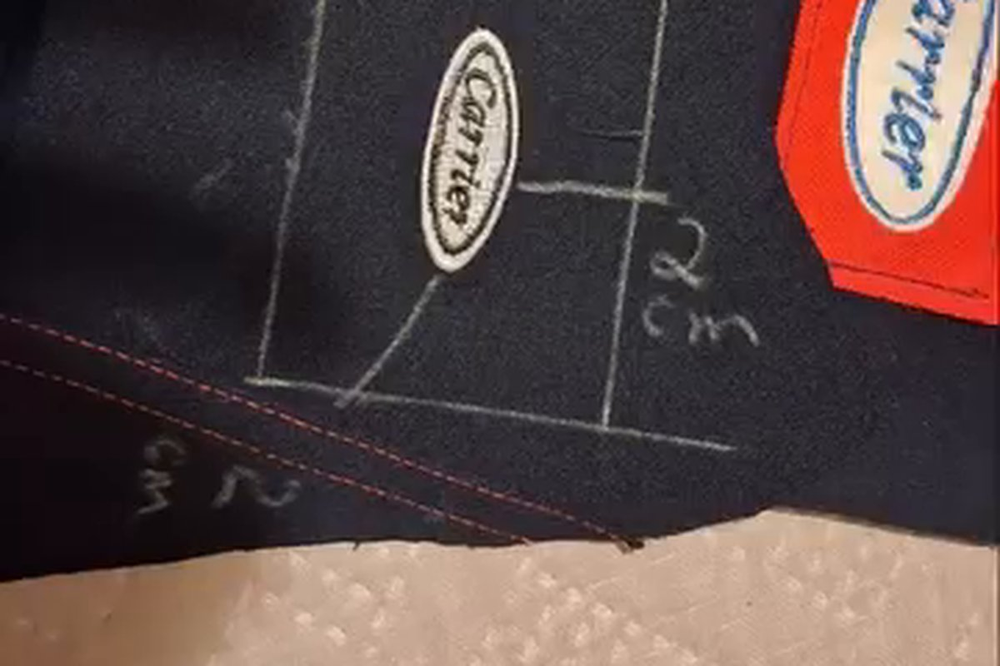

Midea Carrier
Uniformes inservíveis em linha de brindes
Coleta, descaracterização peça por peça e confecção de necessaires, sacos e ecobags a partir do tecido dos próprios uniformes. Cada peça saiu com QR Code para o colaborador acessar a história do material.
- 2.500+ itens produzidos (Midea Carrier e Santista)
- QR Code por peça, com storytelling de origem